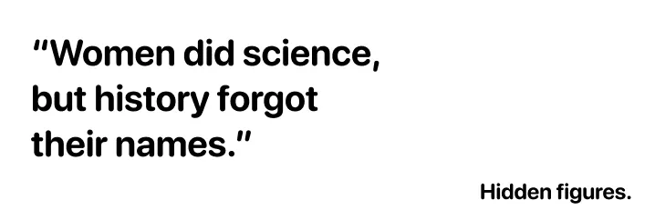

In The Glass Universe by Dava Sobel, the female astronomers of the Harvard Observatory are finally honored, after having worked in the shadows for a long time without official recognition.
Researchers
in Literature.
Literature plays an essential role in the recognition of female scientists. Through novels, biographies, and essays, it helps repair historical injustices and make visible those whose discoveries have been erased or attributed to men.
Examples.
Similarly, Rise of the Rocket Girls by Nathalia Holt and Hidden Figures by Margot Lee Shetterly recount the essential role of NASA women, long ignored in narratives of space conquest.
These works remind us that women have been major actors in scientific progress, even if history has not always remembered them.
By highlighting these forgotten figures, literature becomes a powerful tool for recognition and education. It complements scientific popularization and reinforces the site's message: fighting against the invisibilization of women and promoting diversity in the scientific world.
Quote.
Margot Lee Shetterly.

Timeline.
Here is a timeline highlighting some key dates for women in science, showing that despite obstacles, they have always been present.
1938
Lise Meitner
1952
Rosalind Franklin
1959
Marthe Gautier
1960
Jane Goodall
1969
Margaret Hamilton